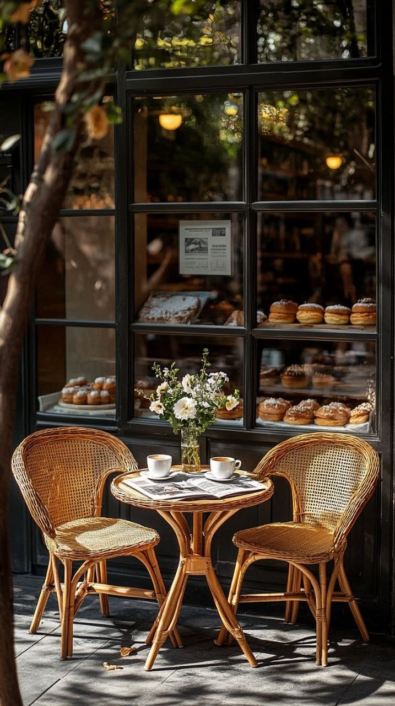

A Essência do Le Jardin de Flore
Uma viagem sensorial no tempo que combina o charme da arquitetura parisiense à pureza dos cafés artesanais.
Onde o Tempo Desacelera
Quem passava pela movimentada calçada parisiense via apenas uma discreta porta de ferro batido com um letreiro elegante que dizia Le Jardin de Flore. Mas, ao cruzar o pequeno corredor de entrada, o barulho do trânsito e a pressa da cidade grande pareciam desaparecer instantaneamente, dando lugar ao som suave de água corrente e acordes baixos de jazz.
O grande diferencial do Le Jardin de Flore é o seu pátio interno escondido. Ali, a arquitetura clássica francesa de tijolos aparentes e janelas em arco serve de suporte para um verdadeiro ecossistema suspenso: samambaias verdejantes, jasmins perfumados e trepadeiras cobrem as paredes, criando um teto vivo que filtra a luz do sol.
Graças à imensa cobertura de vidro retrátil, o espaço é inundado por uma iluminação natural perfeita, banhando as mesas de mármore e as cadeiras de palha trançada em um brilho dourado e acolhedor.


O Balcão & A Pâtisserie
No centro desse refúgio, nosso balcão exibe redomas de vidro com croissants perfeitamente folhados, tarte tatin quentinha e macarons delicados em cores suaves. O aroma do café moído na hora mistura-se ao perfume das flores frescas espalhadas pelo ambiente.
É o lugar favorito de artistas que buscam inspiração em seus cadernos de desenho, casais que conversam em tom confidencial e leitores que passam horas perdidos entre páginas de livros, acompanhados por uma xícara de cappuccino cremoso.
Ao entardecer, quando os raios dourados tocam discretamente o topo da Torre Eiffel, pequenas velas são acesas e as luminárias vintage ganham vida.
Grãos Raros
Microlotes selecionados com torra média artesanal feita sob medida.
Manteiga AOP
Nossos folhados usam a legítima manteiga francesa de denominação protegida.
Jardim Vivo
Mais de 40 espécies botânicas que purificam o ar e trazem frescor natural.
Jazz Acústico
Trilha sonora cuidadosamente selecionada para desacelerar o ritmo da alma.